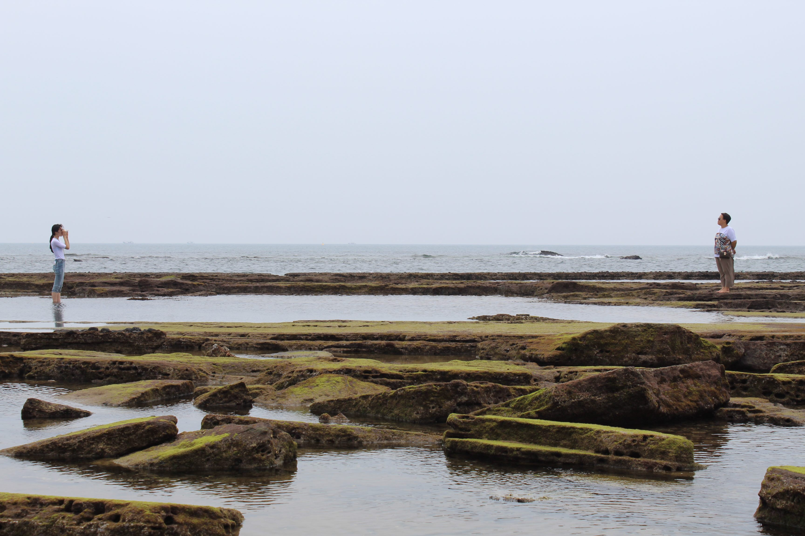

Wait, who is this guy?
This guy is Min Kang, a grade 10 student attending William Lyon Mackenzie.
He made this website/portfolio for his ICS class.
He has a hobby of solving puzzle, so he is currently working on a puzzle game for his culminating assignment.
In school, Min in interested in physics, math, and computer science. He's not too much of an english guy.
Min has stepped on a frog. He thinks it's a good conversation starter, but that's debateable.
Min also takes some mediocre photos. Below are some of these photos.

 ×
×